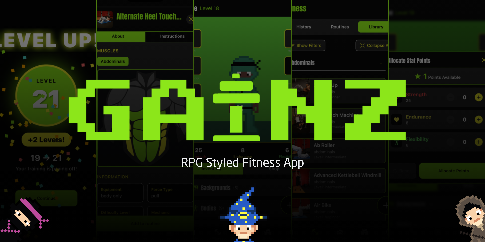
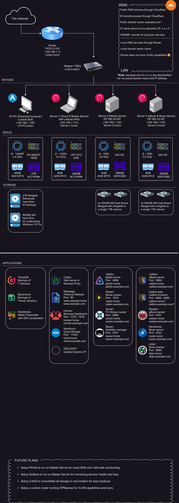
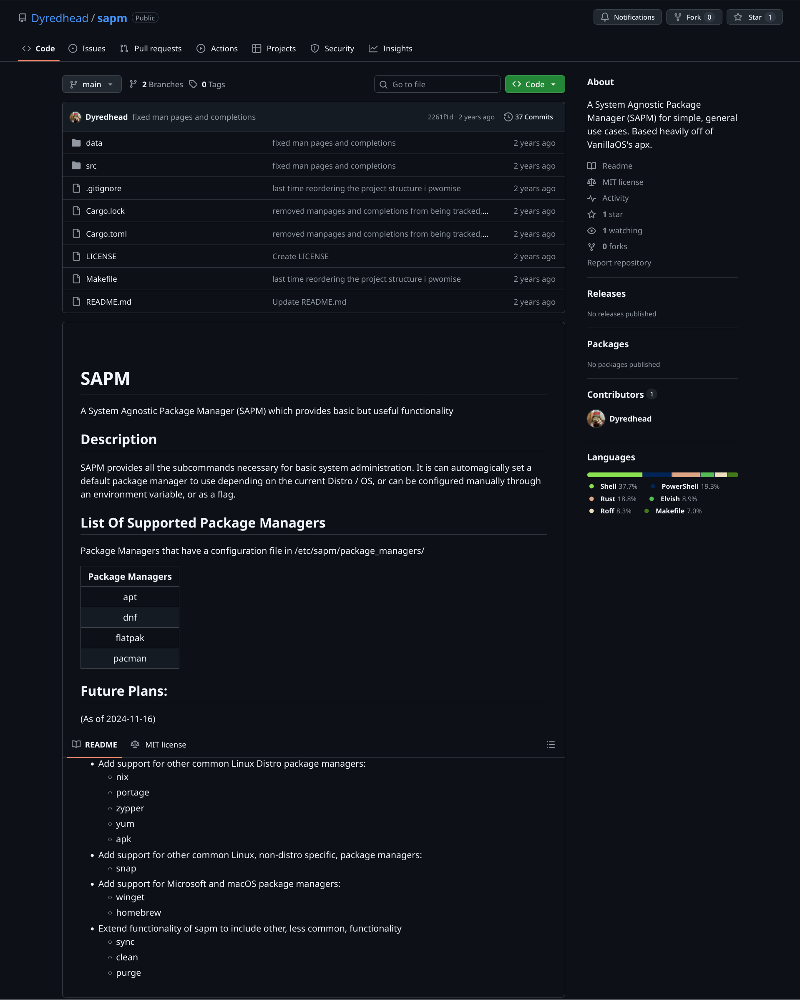

Education
Hunter College (CUNY) |
Manhattan, NY |
| Bachelor of Arts in Computer Science, Minor in Mathematics | Aug. 2023 - May 2027 |
|
|
|
Experience
Edith and Carl Marks JCH of Bensonhurst |
Brooklyn, NY |
| Marketing Intern | Aug. 2024 – Present |
- Worked in a high-paced environment, adapting website and flyer content at a moment’s notice, to reflect changes.
- Maintained and expanded the WordPress website, serving thousands of daily visitors.
- Used Mailchimp and Wufoo to facilitate communication with thousands of subscribing members.
- Used Photoshop and Canva to design, create, and update flyers for new and existing programs.
Projects
Gainz: CSCI 49900 Capstone Final Group Project |
(github.com/MaxFilsR/Gainz) |
| Actix Web, Caddy, Cloudflare, Docker, PostgreSQL, Rust, React Native, SQLx |
- Spearheaded backend development with 62,000 lines of code written.
- Designed and wrote a RESTful CRUD API specification, which was later translated into JSON Schema.
- Designed and wrote an authentication for an API using JWTs.
- Designed and wrote PostgreSQL database schemas.
- Designed and wrote database queries using the SQLx library to be injection-proof and efficient.
- Hosted backend, publicly exposing API through a proxied domain on Cloudflare, and a Caddy reverse proxy, with both the server and database running inside a Docker container, using Docker Compose.
Homelab |
(github.com/Dyredhead/Homelab) |
| Caddy, Cloudflare, Debian, Docker, Git, OPNsense, Proxmox, WireGuard |
- Installed OPNsense on personal router and fully configured it with local DNS, VLANs, and port forwarding.
- Fully wiped and prepared two mini PCs and a laptop, installing extra storage through SATA SSDs
- Installed Proxmox hypervisors, Debian VMs, and Docker containers
- Configured Cloudflare and a Caddy web server to allow for reverse-proxying and DNS.
- Configured a WireGuard VPN server to allow for better security and private tunnel access.
- Configured a public-facing Jellyfin multimedia server to allow for on-demand media streaming by friends & family.
SAPM |
(github.com/Dyredhead/sapm) |
| Linux, Rust |
- Used Rust to write a package manager wrapper for the most popular Linux package managers, to create a single, generalized, system-agnostic manager.
- Published as a package to the Arch User Repository (AUR).
Gallery

Gainz: CSCI 49900 Capstone
Final Group Project
Gainz is more than a fitness tracker — it’s a fitness game. The goal is simple: make working out fun, rewarding, and addictive through smart gamification and consistent feedback loops. Resources

Homelab
My homelab, with network diagrams made using draw.io

SAPM
A System Agnostic Package Manager (SAPM) for simple, general use cases. Based heavily off of VanillaOS's apx.
Technical Skills
- Languages: Python, Rust, PostgreSQL
- Frameworks & Libraries: Actix Web, Flask, SQLx
- Developer Tools: Docker, Git/GitHub, Proxmox, Linux, VS Code
- Non-Developer Tools: Canva, GoFMX, Mailchimp, Microsoft 365, Photoshop, Squarespace, WordPress, Wufoo
- Other: Fluent in Russian